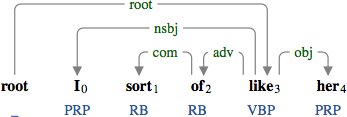
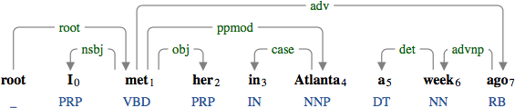
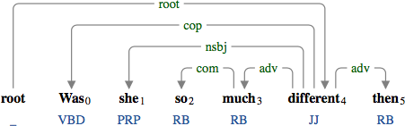

adv
: adverbial modifier
An
adverbial modifier
(
adv
) is an adverbial adding extra meaning to its head.

The adverb phrase "sort of" modifying "like".

The adverb phrase "a week ago" modifying "met".

The adverb phrase "so much" modifying "different".